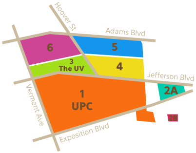
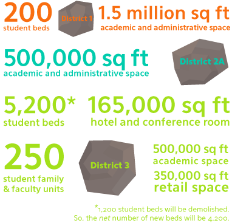
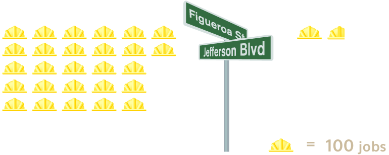
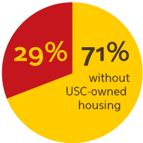
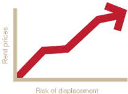
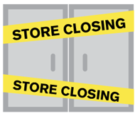

What's Up With the Master Plan?!!
For a while, I have been hearing all this talk about a "Master Plan" that USC has been working on. Sound intimidating? Yeah, I thought so too. Curious, I decided to do some digging around of my own.
Here's the dirt.
A master plan is an outline charting the long-term growth of an institution.
The current Master Plan is USC's outline for redeveloping six districts surrounding the campus. It will direct the course of development from now until the year 2030.
What's being built?
Why? So That USC Can:
- Build more housing for students and faculty
- Generate more jobs and businesses
- Promote commercial and residential investment
- Create a safe and appealing campus and neighborhood
Sounds great...until I discovered USC's rocky past with its neighbors.
1950s to 1960s

USC had been considering leaving South LA and moving to a more prosperous location. To prevent this, the City
agreed to USC's demand for redevelopment.
57 acres is the size of 75 football fields!
1970s
Century Apartments was originally supposed to be low-income community housing. But when the project was almost complete, USC acquired it for student housing, displacing 48 community residents who had already moved in.
1980s to 90s
In 1989, USC announced plans for USC Plaza, a new commercial development at Figueroa and Jefferson that would generate 2700 jobs. Instead, USC used the land as a parking lot for 15 years, then built the Galen Center, which created only 174 jobs. In response, some community groups felt betrayed by USC's decision to choose an athletic center over increased economic benefit for the community.
Yikes.
Clearly, USC's redevelopment efforts in the past have been a bit...controversial.
"But things are different now!"
"New retailers will be affordable for students and community members!"
"The Master Plan will generate millions of dollars for community projects and 12,000 new jobs!"
"900 non-USC housing units will be returned to local residents!"
"There will also be bike lanes!"
I digress. But naturally, I'm still skeptical for several reasons:
What Falls Through The Cracks
1.
There still won't be enough student housing.
After the additional 4,200 beds are built, the total number of USC-owned housing covers only 29% of students. Keep in mind that USC has steadily increased enrollment of international and out-of-state students, for a net increase of 5,000 students by 2030.
2.
Many students can't afford the new private housing.
Privately-owned non-USC housing being built to house students is unaffordable with places like Gateway costing as much as $4,000 per apartment/month. Meanwhile, more than 60% of students are on financial aid.
3.
Private housing can push residents out of the area.
This private housing will also raise overall rent prices in the area. Those who can't afford it will be forced to find housing elsewhere. The city's planning department study of the area around USC shows a loss of 1,300 affordable units over the next five years.
4.
Current retailers will be displaced.
Current retailers at the University Village have to find a new location during the two-year construction of District 3-a tall order for many of the mom and pop shops.
Why does any of this matter?
Seeing as most students only spend 4 years (or less) at USC, most of us probably won't even be here once these developments are completed.
But we can decide what to do.
This master plan, like the one before it, will impact the area around USC for years to come. In 2030, if we speak up, there can be many community residents still living here, just as they have been for decades. There can be future Trojans, who experience a USC that has learned how to grow with its neighbors, a USC we have an opportunity to shape- that is, if we take it.
This website is not associated with or endorsed by the University of Southern California. The information contained in this website is for general information purposes only. While we endeavour to keep the information up to date and correct, we make no representations or warranties of any kind, express or implied, about the completeness, accuracy, reliability, suitability or availability with respect to the website or the information, products, services, or related graphics contained on the website for any purpose. Any reliance you place on such information is therefore strictly at your own risk.